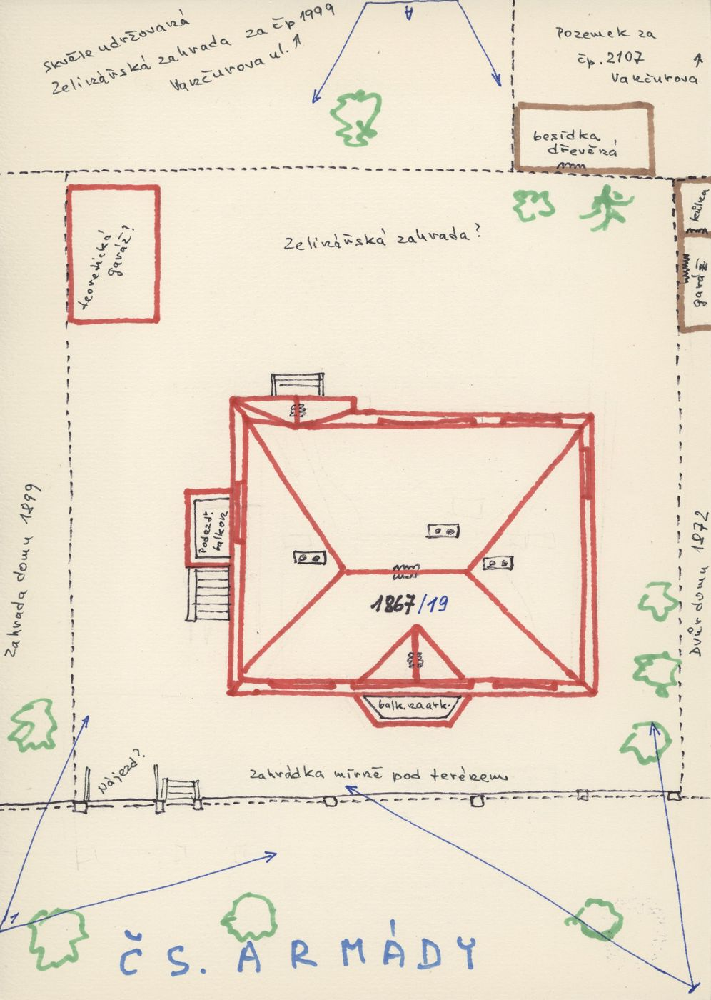
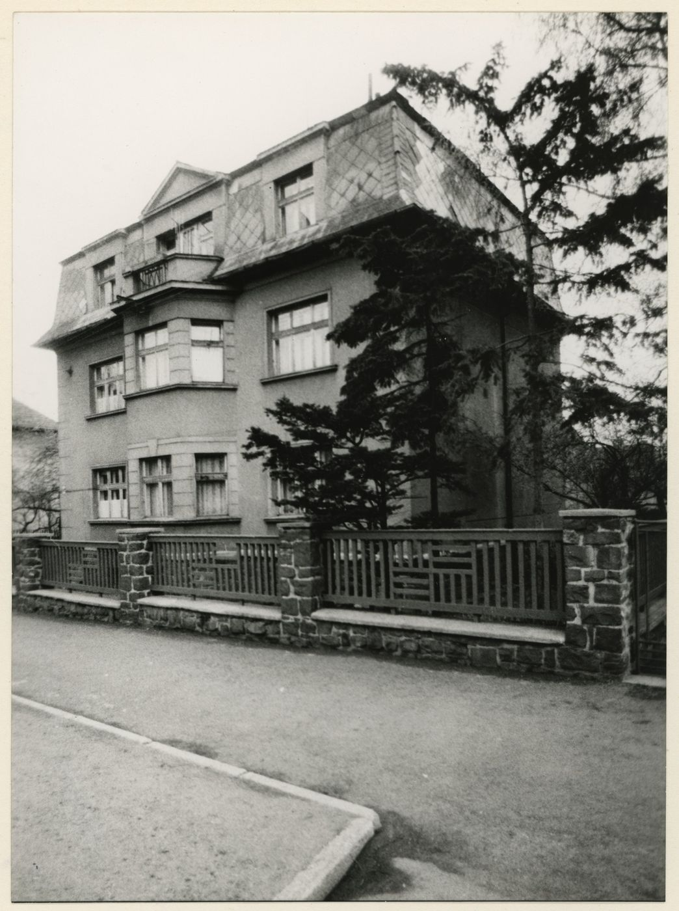
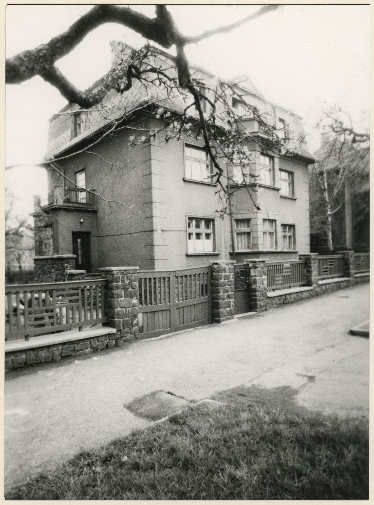
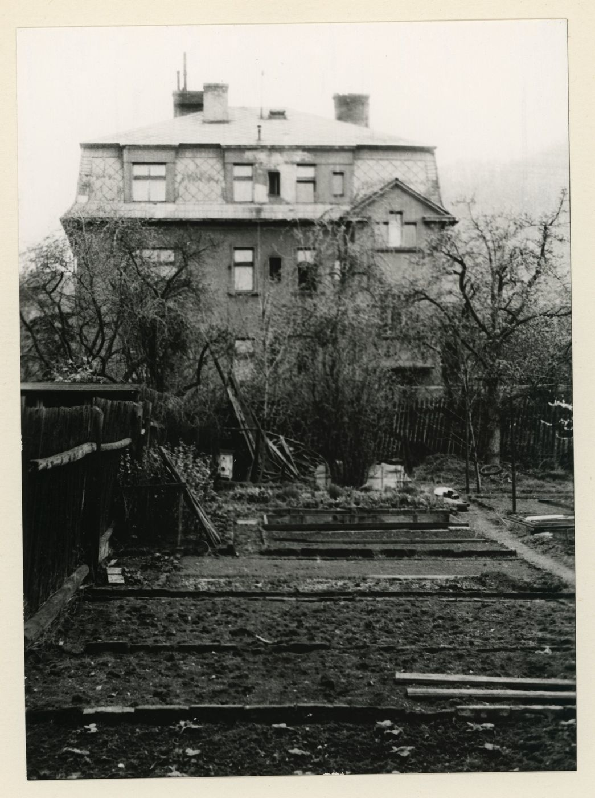
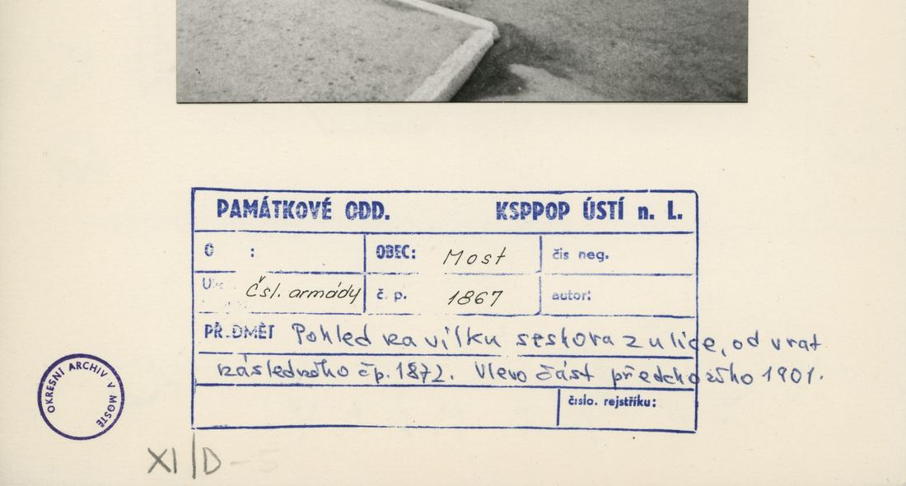
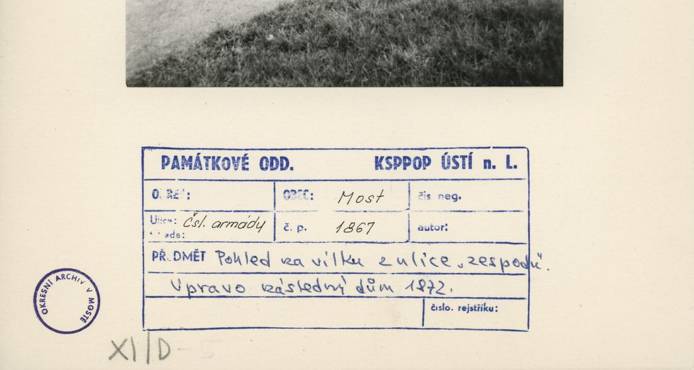
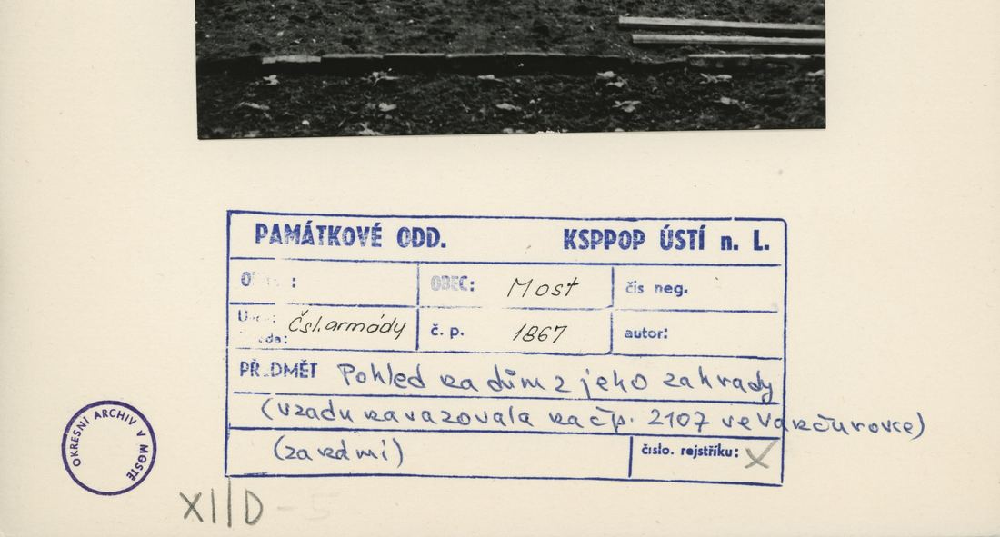
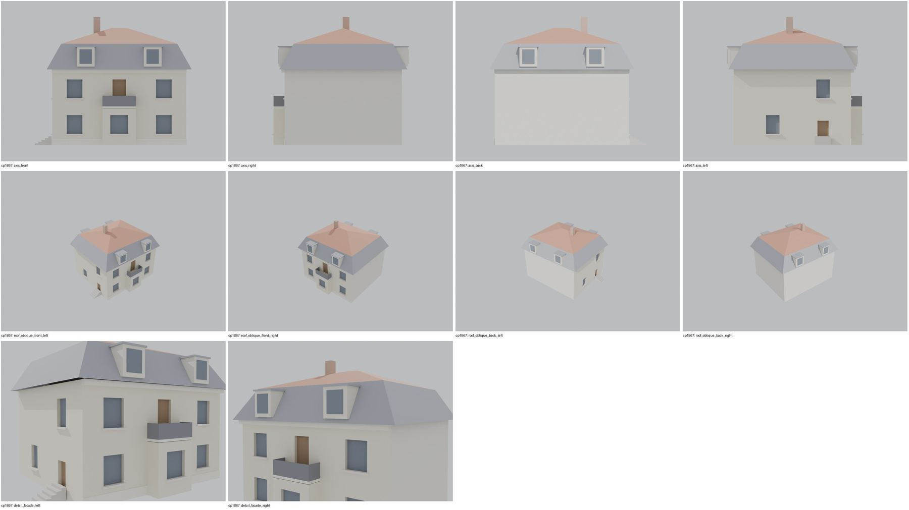

Identita domu
Samostatná vila (plán cp_1867_001: vlevo zahrada domu 1899/1901, vpravo dvůr domu 1872; „balkon na arkýři“ k ulici, „podezd. balkon“ + schody vlevo). Foto cp_1867_001/002 (z ulice), cp_1867_003 (ze zahrady), cp_1872,1867_001..003 (zadky, pohled ulicí vzhůru).
Použité prameny: cp_1867_001 PLANE; cp_1867_001..003, cp_1872,1867_001..003 PHOTO.
GIS: bez GIS. V oblasti „Cs_Armady“ je dům veden podruhé se stejnými přílohami.
Prameny (13 příloh)
Všechny přílohy domu v databázi Libuše, každá otevřená a zapsaná v plan_search.json. Stav rešerše plánů: found; situační/střešní náčrt (ruční, nekótovaný, PLANE,BW) – není stavební výkres; půdorysné rozměry z GIS nebo odhad. Kliknutím otevřete větší náhled.


situační náčrt
SHA-256 b75533a3421f…


fotografie
SHA-256 888eeb8183ff…


fotografie
SHA-256 fe1e50f382a3…


fotografie
SHA-256 7ebd3662c349…

fotografie
SHA-256 2151e7c52a83…

fotografie
SHA-256 23c1ce23b2c5…

fotografie
SHA-256 8cc9efff42f5…


archivní karta (rub) · výřez textu
SHA-256 f3255a950b76…


archivní karta (rub) · výřez textu
SHA-256 98625ec5aff8…


archivní karta (rub) · výřez textu
SHA-256 8296007ba27d…

archivní karta (rub) · výřez textu
SHA-256 b9e4a4f544db…

archivní karta (rub) · výřez textu
SHA-256 0fe1363dc298…

archivní karta (rub) · výřez textu
SHA-256 3e2fd2d16d4c…
Model
| Revize modelu | r3 (zachované revize: r1, r2, r3) |
|---|---|
| Poloha | odhad: sekvence podle orientačních čísel |
| Šířka průčelí | 12,00 m |
| Výška okapu | 6,80 m (odhad) |
| Podlaží | 2 |
| Střecha podle pramenů | mansardová valba |
| Střecha v modelu | mansardová |
| Otvory | 9 |
| Vikýře / vedlejší hmoty | 0 / 1 |
| Polygonů | 258 |
Zdroje rozměrů, jak jsou zapsány v plánu modelu
| Rozměry | HYPOTHESIS 12 x 10.5 m (no GIS) |
|---|---|
| Průčelí | photos cp_1867_001/002/003, sketch cp_1867_001: balcony on a street bay, pedestal balcony + stairs on the left side |
| Střecha | mansard-type attic (photo cp_1867_002) |
Kontrola: 10 povinných pohledů

Nálezy
- r3: balkonová deska nad arkýřem bez průniku; mansardové podkroví 2+2 okna, boční vstup s 5 stupni, arkýř s balkonem – odpovídá cp_1867_001/002 a náčrtu
Opravy
- r3: balkon
Hypotézy
Vše níže je model_hypothesis, provisional, locked: false.
- půdorys 12 × 10,5 m
- poloha sekvence
- mansardové podkroví zjednodušeno
- bay and balcony sizes
- all storey heights, opening sizes and roof pitches are estimates from photographs (model_hypothesis, provisional, locked=false)
- r3: balcony slab lifted 2 cm above the bay top
Soubory
- Model čp. 1867, GLB
- Pracovní složka: F:\MOST\output\zatecka_street_claude_2026-10-17\houses\cp1867\
plan_search.json,geometry_plan.json,README.md,texture_handoff_spec.json,r3/cp_1867_G_r3.blend,r3/qa/qa_review.json